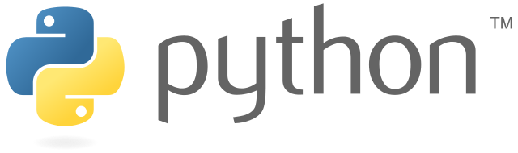

Python
Python is an interpreted, high-level and general-purpose programming language. Created by Guido van Rossum and first released in 1991, Python's design philosophy emphasizes code readability with its notable use of significant whitespace. Its language constructs and object-oriented approach aim to help programmers write clear, logical code for small and large-scale projects.
Python is dynamically typed and garbage-collected. It supports multiple programming paradigms, including structured (particularly, procedural), object-oriented, and functional programming. Python is often described as a "batteries included" language due to its comprehensive standard library.
Python was created in the late 1980s as a successor to the ABC language. Python 2.0, released in 2000, introduced features like list comprehensions and a garbage collection system with reference counting.
Python 3.0, released in 2008, was a major revision of the language that is not completely backward-compatible, and much Python 2 code does not run unmodified on Python 3.
The Python 2 language was officially discontinued in 2020 (first planned for 2015), and "Python 2.7.18 is the last Python 2.7 release and therefore the last Python 2 release." No more security patches or other improvements will be released for it. With Python 2's end-of-life, only Python 3.6.x and later are supported.
Python interpreters are available for many operating systems. A global community of programmers develops and maintains CPython, a free and open-source reference implementation. A non-profit organization, the Python Software Foundation, manages and directs resources for Python and CPython development
